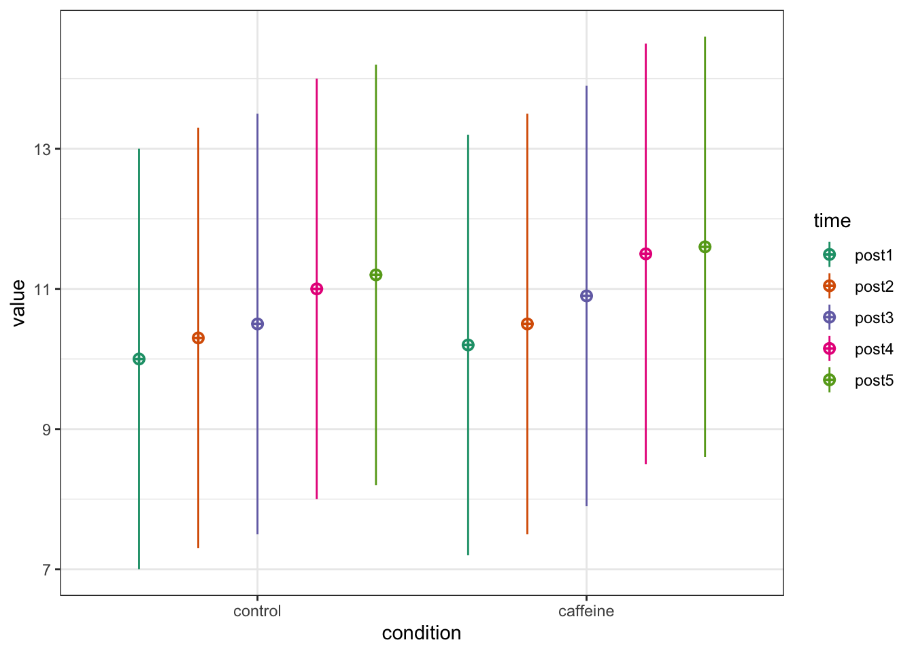

************
Welcome to faux. For support and examples visit:
https://www.scienceverse.org/faux/
- Get and set global package options with: faux_options()
************
Linear mixed models are used when data is nested, meaning there are multiple observations for each participant under one or more conditions. For example, in a study investigating the effect of sleep deprivation, two groups of participants (sleep-deprived vs. control) could be measured repeatedly on reaction time across a week. Because measurements are repeated within participants, observations are not independent. Linear mixed models handle the correlation among repeated measurements and provides more accurate estimates than traditional methods like t-tests or repeated measures ANOVA (Brysbaert and Stevens 2018). For a gentle introduction to general linear mixed models, readers are referred to Brysbaert et al. (2018) and Brown (2021).
8.1.1 Summary-statistics-based approach
Murayama et al. (2022) created an app to run power analyses of mixed-effects models with two-level nested data available at https://koumurayama.shinyapps.io/summary_statistics_based_power/. Their approach relies on the fact that mixed-effects models produce approximately identical results to a simpler statistical test (e.g., one-sample t-test) on aggregated data under certain assumptions (i.e., cluster size and the variance of x are constant across clusters). To illustrate this, suppose that a researcher collects 10 data points (Level 1; L1) nested within 50 participants (Level 2; L2). For each participant, 5 data points are from a control condition (sleep deprived) and 5 data points are from an experimental (sleep deprived + caffeine) condition (see Figure 8.1).
# For reproducibilityset.seed(050990)# Set parametersn<-50mu<-c(10, 10.2, 10.3, 10.5, 10.5,10.9, 11, 11.5, 11.2, 11.6)sd<-3r<-0.8# Simulate datadesign<-sim_design( within =list( time =c("post1", "post2", "post3", "post4", "post5"), condition =c("control", "caffeine")), n =n, mu =mu, sd =sd, r =r, plot =TRUE, long =TRUE)

Figure 8.1: Simulated pattern of means for the 2 (condition) x 5 (time) within-subject design.
The first step is to calculate the average of the measurements for each experimental condition:
This is statistically equivalent to running a mixed model with one fixed effect and with one random effect using lmer(). Since lme4::lmer() does not provide p-values, we use lmerTest::lmer() instead.
# Change order of factors to obtain the same estimate (i.e., -0.5 rather than 0.5)df$condition<-factor(df$condition, levels =c("caffeine", "control"))fit<-lmerTest::lmer(average~condition+(1|id), df)|>summary()fit$coefficients|>kable(digits =4)|>kable_styling()
Estimate
Std. Error
df
t value
Pr(>|t|)
(Intercept)
10.8634
0.3547
51.5863
30.6256
0.0000
conditioncontrol
-0.2195
0.1138
49.0000
-1.9288
0.0596
Note that both t.test() and lmer() approaches return the same coefficient, t-statistic and p-value indicating that these two analytic approaches are equivalent. In fact, when the two aforementioned conditions are met (i.e., cluster size and the variance of x are constant across clusters), mixed-effects modelling and summary-statistics (i.e., t-test) approach are mathematically equivalent.
Once we obtain the t-value, we need to convert the t-value to Cohen’s d as if the t-value were obtained from a one-sample t-test with the sample size. This Cohen’s d can be then used to conduct a power analysis of one-sample t-test with G*Power, pwr, or other software.
# Compute Cohen's dzd<-paired_result$statistic/sqrt(n)# Conduct power analysispwr<-pwr.t.test(d =d, power =0.8, sig.level =0.05, type ="one.sample")pwr
One-sample t test power calculation
n = 107.4231
d = 0.2727751
sig.level = 0.05
power = 0.8
alternative = two.sided
Assuming a true effect size of -0.27, our study design would achieve a power of 80% with a sample size of 108.
Figure 8.2: A priori power analysis to estimate sample size for L2 based on the summary-statistic approach
Important
The app only provides power estimates of mixed-effects models with two-level nested data (not the models with three-level data or crossed-random effects).
This app mainly allows researchers to perform power analysis to determine L2 sample size. The app can still show the impact of cluster size on power, but you need to supply more information beyond the summary statistic and sample size.
Computed power is based on the assumption that the new study has the same set of predictors as assumed in the calculation.
When planning only a L2 sample size for a new study, the estimated appropriate L2 sample size is deemed valid only if cluster size (i.e., the number of individual units within each cluster) remains the same as assumed in the calculation.
Power analysis for mixed models using simulations can be challenging because it requires additional information, including:
The design to be used (as for other power analyses)
The anticipated effect size or the mean condition difference (as for other power analyses)
Estimates of the relevant variance components (i.e., random intercept and slope).
The anticipated numbers of participants (as for other power analyses) and observations per condition.
8.1.3 Simulation-based power analysis (work in progress)
An alternative is to use simulation-based power analysis. For a comprehensive tutorial on this approach, readers are referred to Debruine and Barr (2021).
Brown, Violet A. 2021. “An Introduction to Linear Mixed-Effects Modeling in r.”Advances in Methods and Practices in Psychological Science 4 (1): 2515245920960351. https://doi.org/10.1177/2515245920960351.
Brysbaert, Marc, and Michaël Stevens. 2018. “Power Analysis and Effect Size in Mixed Effects Models: A Tutorial.”Journal of Cognition 1 (1). https://doi.org/10.5334/joc.10.
DeBruine, Lisa M., and Dale J. Barr. 2021. “Understanding Mixed-Effects Models Through Data Simulation.”Advances in Methods and Practices in Psychological Science 4 (1): 2515245920965119. https://doi.org/10.1177/2515245920965119.
Murayama, Kou, Satoshi Usami, and Michiko Sakaki. 2022. “Summary-Statistics-Based Power Analysis: A New and Practical Method to Determine Sample Size for Mixed-Effects Modeling.”Psychological Methods 27 (6): 1014–38. https://doi.org/10.1037/met0000330.
Westfall, Jacob, David A. Kenny, and Charles M. Judd. 2014. “Statistical power and optimal design in experiments in which samples of participants respond to samples of stimuli.”Journal of Experimental Psychology. General 143 (5): 2020–45. https://doi.org/10.1037/xge0000014.